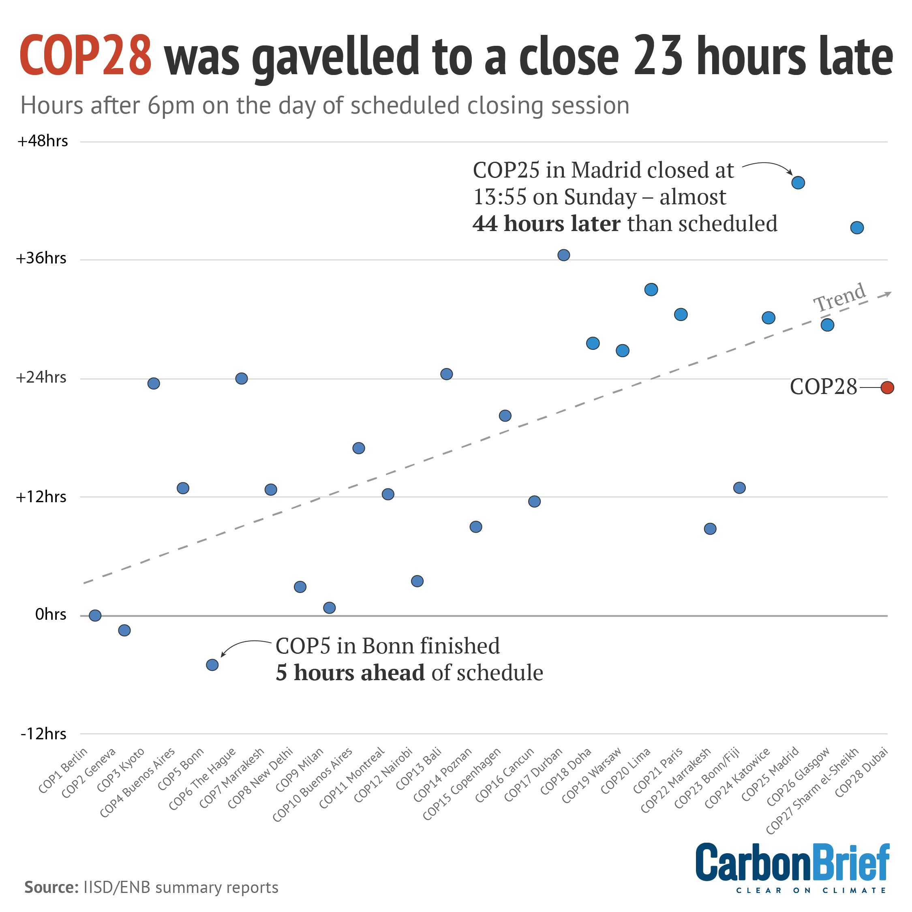
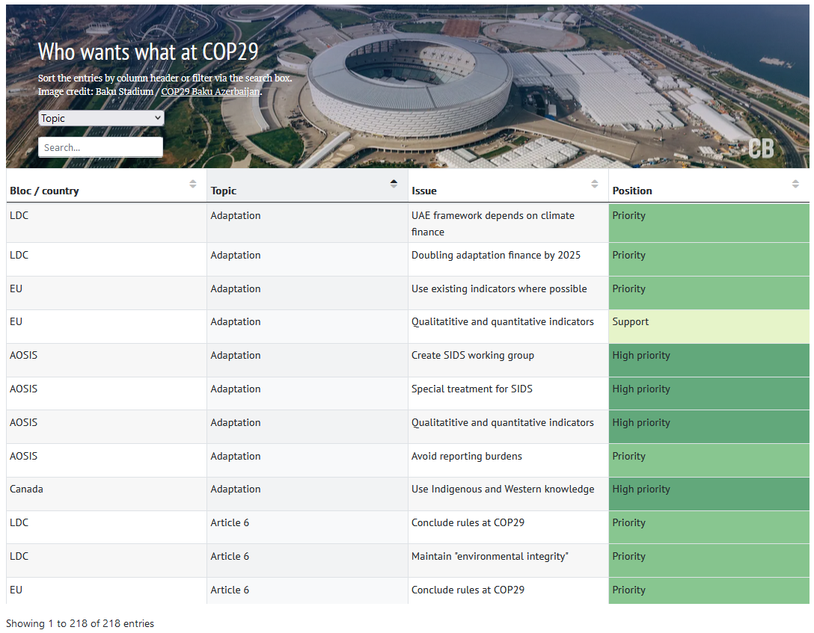

const rows = document.querySelectorAll('#dTable tbody tr');
const data = Array.from(rows).map(row => Array.from(row.querySelectorAll('td')).map(cell => cell.innerText));
const csvContent = "data:text/csv;charset=utf-8," + data.map(e => e.join(",")).join("\n");
const encodedUri = encodeURI(csvContent);
const link = document.createElement("a");
link.setAttribute("href", encodedUri);
link.setAttribute("download", "table_data.csv");
document.body.appendChild(link);
link.click();
Consensus at COP29? (Bitch Better Have My Money)
Climate
COP29 has kicked off this week in Baku. As jaded as some may be about climate diplomacy, all options must be considered, pursued, and exhausted to make a desperately needed dent in the degree of warming.
Most decisions at COP are made by consensus, and “consensus” is not even well defined and agreed on. This is insane. A second of reflection is enough to understand that consensus decision making will likely lead to obstruction and delay - let alone before agreeing to specific criteria for consensus. It’s almost like vested interests wanted to block meaningful action on climate change by baking obstruction into the decision making process. Well…yes. Here is Joanna Depledge explaining how those vested interests disputed the rules of procedure at COP1:
Some political wranglings over the finer points of the rules of procedure were to be expected. But what should have been a rather routine matter escalated into a major political storm in the run-up to COP1, when members of the oil producers’ cartel the Organization of the Petroleum Exporting Countries (OPEC) – principally Saudi Arabia and Kuwait, also Nigeria, Iran and others – began to argue that there should be no “last resort” voting rule at all. Instead they argued that substantive decisions should be taken only by consensus.
The challenge of consensus decision-making in UN climate negotiations, Joanna Depledge (05/03/2024)
Now, one could reasonably conclude that COP is just a sham. Fossil capital is just mocking us, bringing the weight of its accumulated power to bear on the scales, tipping them decisively in favour of planetary destruction. Alternatively, it might be regarded as a miracle that even the most watered down of commitments emerges at all from COP. This is more miraculous given such a tight schedule that rarely overruns…

To understand how fraught with difficulty this whole operation is, the good people at Carbon Brief publish a wonderful table on “who wants what at COP”:

The first column shows countries and UN negotiating blocs. The second column shows the topics up for debate (e.g. adaptation, finance). The third column shows specific issues within those topics. And the final column indicates the position that each grouping is likely to take on each particular issue at the summit. Carbon Brief explains the positions like so:
This ranges from “high priority” – meaning the grouping is likely to be strongly pushing the issue – to “red line”, which means the grouping is likely to oppose this issue and show no room for compromise.
Importantly, the entries for this table are based on Carbon Brief’s annual assessment of submissions to the UNFCCC, public statements, and wider research. I have confirmed with Carbon Brief in private correspondence that the ratings (priority, oppose etc.) are their interpretation. I also double checked some issues I had with the table that they were kind enough to fix up (legit they’re so great).
I’m not sure how Carbon Brief manage to do all this. It sounds like a lot of work. They’ve published this table before the widespread use of LLMs as well. For the moment, I’m just going to trust that this table is a reasonable approximation of positions that countries/blocs have at COP. Carbon Brief do mention it is a live document that they intend to update. In any case, it’s pretty cool and useful. We can look through the table and see the aims of negotiators and the various red lines.
Even so, I was thinking this table could be rearranged to get a big picture look at consensus and conflict at COP. I suspect COP-goers and organisers have something like this already. What we’re looking for is a high level overview of the strategic picture at COP. Thinking back to the issues with consensus decision making, such a visual would lay bare how much of a miracle or a farce the whole operation is. Here is the great big picture I came up with - a heatmap where the columns are the countries/blocs and the rows are specific issues. The colours are the positions of each country or bloc. The lines at the top and side are dendrograms grouping similar countries/blocs and specific issues. Similarity is measured with hierarchical clustering, and observations that are closer together, as mapped by the dendogram, are more similar:

What can we see? The heatmap reveals sharp divides on climate finance and a host of issues, particularly between developing and developed countries (big surprise). First, two caveats to the interpretation:
Topics on each row:
- The specific issue on each row is preceded by the general topic it concerns e.g. loss and damage (L&D), New Collective Quantified Goal on Climate Finance (NCQG), Adaptation, Mitigation, UAE Stocktake Dialogue.
Grey cells (no recorded position):
- Grey cells reflect issues where no explicit stance was recorded in Carbon Brief’s table from a country or bloc on the issue. This does not indicate neutrality but rather an absence of documented position, likely due to selective prioritisation, strategic omission, or non-discussion on those topics.
Lets start with some salient features - the dark green high priority items. To nobodies surprise, these mainly concern climate finance. Developing country blocs are calling for firm commitments on finance. These countries are mainly on the right side of the heatmap, and the hierarchical clustering highlights them. They tend to advocate for accessible climate finance in the form of grants or concessional loans, for the new climate finance goal to include loss and damage finance, and for finance to be needs-based, principled, well-defined, and transparent. Reasonable demands! Some within this group are calling for at least $1 trillion in climate finance mobilized per year by developed countries. If I’m not mistaken, “mobilised” still needs a clear definition (as countries count this differently) — and, in reality, a trillion is likely insufficient.
Another obvious trend is that most issues related to adaptation are raised by the least developed countries and the alliance of small island states. This reflects the well-documented bias toward mitigation discussions and funding, which often sideline adaptation needs.
In the top left, we see a line of red. Many developed countries oppose focusing the UAE stocktake meeting solely on climate finance, preferring a broader agenda. This likely reflects a reluctance to let finance dominate the dialogue. Definitely not trying to evade responsibility, right?
Finally, let’s visit the patch of red in the middle. Much of this reflects developing countries’ stances on climate finance and the NCQG. Here, they resist expanding climate finance obligations beyond developed countries, oppose counting domestic resources from developing countries as climate finance (this needs double-checking but I think it’s the claim being made), and reject the idea of a ten-year timeline for the new climate finance goal, likely viewing it as too slow.
I will leave the rest of the heatmap for you to look through. But the main story is well known even if the details aren’t. Overall, the heatmap underscores a long-standing divide: developing countries urgently need finance, while developed nations are dragging their feet.
In the words of the great scholar, badgirlriri:
Bitch better have my money
Y’all should know me well enough
Bitch better have my money
Please don’t call me on my bluff
Pay me what you owe me
Ballin’ bigger than LeBron
Bitch, give me your money
Who y’all think y’all frontin’ on?Robyn Rihanna Fenty (2015)
In the rest of this post I will go through the steps to make the heatmap.
Grab the Carbon Brief table
First I went to the Carbon Brief table in my browser, and grabbed the data as a CSV by typing a bit of javascript into my console:
Next we load up some libraries, grab the CSV, and do some light cleaning:
library(readr)
library(tidyverse)
# Read the CSV file, skipping the first row
data <- read_csv("241113_table_data.csv", col_names = FALSE)
# Manually set the column names
colnames(data) <- c("bloc_country", "topic", "issue", "position")
# remove duplicates
data <- data %>% distinct()
# Inspect the data to confirm the structure
glimpse(data)Rows: 218
Columns: 4
$ bloc_country <chr> "LDC", "LDC", "EU", "EU", "AOSIS", "AOSIS", "AOSIS", "AOS…
$ topic <chr> "Adaptation", "Adaptation", "Adaptation", "Adaptation", "…
$ issue <chr> "UAE framework depends on climate finance", "Doubling ada…
$ position <chr> "Priority", "Priority", "Priority", "Support", "High prio…Sketches?
With the data in hand I was trying to figure out some ways to visualise it.
A crazy venn diagram?
No way. Too many overlapping sets.
An upset plot?
Possibly. But I wanted to keep the whole picture in mind. Not just overlapping country agreement or overlapping policy agreement.
A stacked bar chart per policy coloured by position…or something?
This would obscure other parts of the picture like what countries/blocs agree or disagree. Then I thought…well Carbon Brief are the experts. They picked a table. Why? Because there is a lot of information to deal with. Maybe an alternative representation could build off the table?
A heatmap?
Heatmap it is!
Diplomatic wrangling
To make the heatmap, the Carbon Brief table needed a little wrangling:
# Define the allowed values for the 'position' column in lowercase
allowed_positions <- c("does not support", "support", "priority", "high priority", "oppose")
# Transform data, combining positions for each bloc
transformed_data <- data %>%
mutate(
# Standardize 'position' to lowercase and trim whitespace
position = str_trim(tolower(position)),
# Append unallowed values in 'position' to 'issue' column with separator
issue = if_else(
!(position %in% allowed_positions) & !is.na(position),
paste(issue, position, sep = " - "),
issue
),
# Retain only allowed values in 'position'; others set to NA
position = if_else(position %in% allowed_positions, position, NA_character_)
) %>%
# Optionally convert 'position' back to title case if needed
# mutate(position = str_to_title(position)) %>%
# Move content after comma in `issue` to `position`
mutate(
position = if_else(
str_detect(issue, ","),
str_trim(str_extract(issue, "(?<=,).*")),
position
),
issue = if_else(
str_detect(issue, ","),
str_trim(str_extract(issue, "^[^,]+")),
issue
),
position = tolower(position)
) %>%
# Pivot data wider by 'bloc_country' for each position
pivot_wider(names_from = bloc_country, values_from = position) %>%
# Convert entries to character type and replace "NULL" with "none"
mutate(across(3:23, ~ as.character(.))) %>%
mutate(across(3:23, ~ ifelse(. == "NULL", "none", .))) %>%
# Recode specific 'issue' names for clarity
mutate(issue = recode(issue,
"UAE Dialogue to be run by two co-facilitators - one from developed countries and the other from developing countries" =
"UAE Dialogue led by co-facilitators from dev. & developing countries"
)) %>%
# Shorten specific topic names and combine 'topic' and 'issue'
mutate(
topic = case_when(
topic == "Loss and damage" ~ "L&D",
topic == "Mitigation" ~ "Mit.",
topic == "UAE stocktake dialogue" ~ "UAE stockt.",
topic == "Finance (NCQG)" ~ "NCQG",
TRUE ~ topic
),
issue = paste(topic, issue, sep = "-")
)
# Map 'position' values to numerical values
position_values <- c("none" = 0, "does not support" = -1, "oppose" = -2, "support" = 1, "priority" = 2, "high priority" = 3)
# Transform positions to numeric format and ensure unique 'issue' names
numeric_data <- transformed_data %>%
mutate(across(3:23, ~ recode(., !!!position_values, .default = NA_real_))) %>%
group_by(issue) %>%
mutate(issue = case_when(
n() > 1 ~ paste0(issue, " (", row_number(), ")"),
TRUE ~ issue
)) %>%
ungroup() %>%
select(-topic) %>%
as.data.frame()
# Set 'issue' as row names and remove the 'issue' column for matrix conversion
rownames(numeric_data) <- numeric_data$issue
numeric_data$issue <- NULL
# Convert data to matrix format and replace NA with 0 for heatmap
heatmap_matrix <- as.matrix(numeric_data)
heatmap_matrix[is.na(heatmap_matrix)] <- 0The big picture
And then we just use the pheatmap package to make a heatmap with hierarchical clustering:
library(pheatmap)
# Plot the heatmap
pheatmap(heatmap_matrix,
cluster_rows = TRUE,
cluster_cols = TRUE,
scale = "none",
border_color = "white",
color = colorRampPalette(c("#de425b", "#ef8250", "lightgrey", "#aed987", "#63b179", "darkgreen"))(50),
main = "COP29 Consensus Heatmap",
labels_row = rownames(heatmap_matrix), # Use row names as labels
legend_breaks = -2:3,
legend_labels = c("oppose","does not support","none","support","priority","high priority"),
height = 40,
fontsize_row = 6) 
Voila
I could break this down by the topics (e.g. Loss and Damage, NCQG), but this was an attempt to capture the totality of COP29 (*waves hands around*).